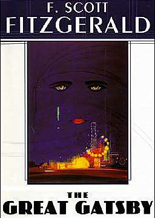

The Great Gatsby
The Great Gatsby, F. Scott Fitzgerald's third book, stands as the supreme achievement of his career. First published in 1925, this quintessential novel of the Jazz Age has been acclaimed by generations of readers. The story of the mysteriously wealthy Jay Gatsby and his love for the beautiful Daisy Buchanan, of lavish parties on Long Island at a time when The New York Times noted “gin was the national drink and sex the national obsession,” it is an exquisitely crafted tale of America in the 1920s.